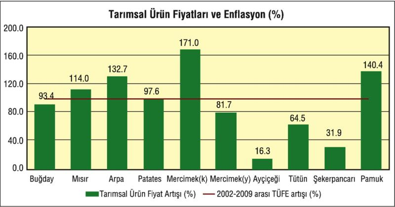
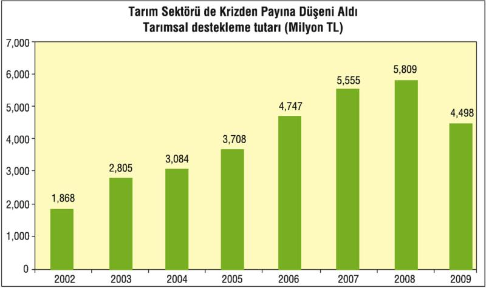
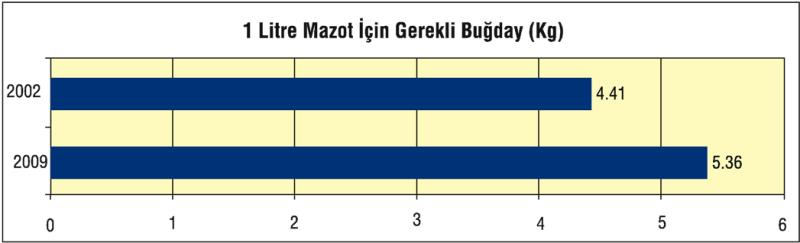
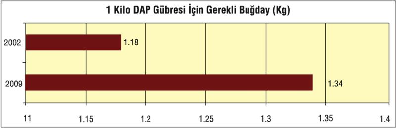
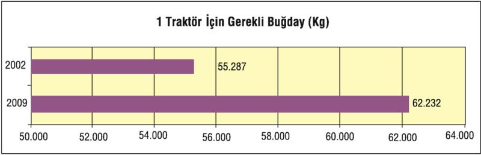

Küresel kriz, uzun süredir yoksullaşma süreci yaşayan küçük üretici köylüyü de olumsuz etkiledi. 2002-2009 yılları arasında bazı tarım ürünlerinin fiyatları aynı dönemdeki toplam enflasyon (TÜFE) oranının altında kaldı. Özellikle buğday, patates, yeşil mercimek, ayçiçeği, tütün, şeker pancarı gibi ürünlerin fiyatları bu dönemde yüzde 98,3 olan toplam enflasyonun altında kaldı.
Söz konusu dönemde mısır, arpa, kırmızı mercimek, pamuk gibi ürünlerin fiyatları ise enflasyondan daha yüksek arttı.

2009 yılında tarım yüzde 3, 3 büyüme gösterse de, son yıllarda uğradığı kayıpları telafi edemedi. Tarım sektörüne yönelik desteklerin azalması ve tarım ürünü ithalatının artmasına paralel olarak Türkiye'nin tarımsal ürün üretimi de istikrarlı değil.
2002 yılında 30,8 milyon tona kadar yükselen Türkiye'nin tahıl üretimi 2009 yılında ancak 33,5 milyon ton olarak gerçekleşti. Bu 7 yılda ancak yüzde 9 dolayında bir artış demek.

Maliye Bakanlığı'nın verilerine göre bütçeden tarım sektörüne yapılan destekleme ödemeleri 2009 yılında yüzde 22,6 oranında azalarak 4,5 milyar liraya kadar düşürüldü.
Kriz nedeniyle bütçe dengelerinde yaşanan bozulmanın faturasının önemli bir kısmının da tarım kesimine çıkarıldığı gözleniyor. Milli gelir içerisindeki payı yüzde 8-9'a kadar gerilediği halde, Türkiye nüfusunun üçte birinin geçimini sağladığı, toplam istihdamın da yüzde 25'ini sağlayan tarım sektörünün destekten yoksun kalması önemli toplumsal sorunlara yol açma potansiyeli taşıyor.
  
Yaklaşık 5,3 milyon kişinin tarımla geçindiği Türkiye'de tarım, daha çok küçük üreticiliğe dayanıyor, üretim aile fertlerince yapılıyor. Tarımda ücretli oranı yüzde 10'un altında. Küçük üreticiliğin, aile işletmeciliğinin hakim olduğu tarım, 1998'de milli gelirde yüzde 12 pay sahibi iken, hızlı bir erozyonla küçüldü ve milli gelirdeki payı 2009'da yüzde 7, 5'a düştü. Dolayısıyla, 5,3 milyon kişinin çalıştığı tarım, ulusal gelirde yüzde 7-8 dolayında bir pay ile düşük bir gelir düzeyine talim ediyor.